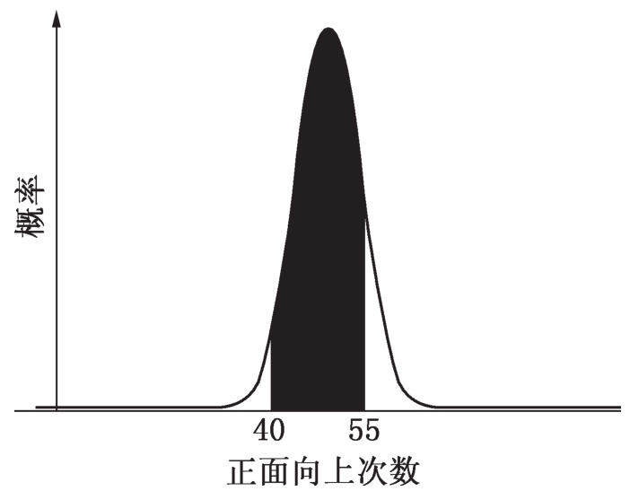
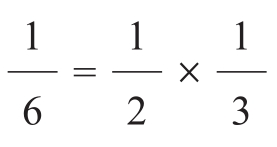

1938年10月4日当爱多士来到高等研究所（IAS）时，研究所刚好成立5周年。它位于新泽西州普林斯顿城的郊区，占地约1平方英里，四周树木环绕，远离外面世界的喧嚣。用其创建者——美国教育改革家弗莱克斯纳（Abraham Flexner）的话来说，这里是知识分子真正的“乐园”。
8年前，弗莱克斯纳开始与后来成为慈善家的路易斯·班伯格（Louis Bamberger）及其胞妹卡罗琳·班伯格·富尔德（Caroline Bamberger Fuld）打交道。这对兄妹在那不久前一直是当时美国第四大零售连锁店班伯格公司的老板。就在1929年美国股票出现猛跌的一个黑色星期一之前6周，他们把连锁店转让给了梅西（R. H. Macy）公司，再度展现了他们创业时的敏锐洞察力和好运气。班伯格家族的慷慨大方就像他们的运气一样，他们决定用自己的钱财为那些曾帮助他们积累财富的人士——新泽西州的顾客们——做一些有益的事。他们的第一个念头是捐助一家医学院。于是兄妹俩拜访了弗莱克斯纳，他是一位以揭露医学院的腐败和欺诈而闻名的著名医生和教育者。
对于如何最佳地利用这笔钱，弗莱克斯纳有他自己的想法。他向来访者描绘了他心目中研究所的蓝图，它与自毕达哥拉斯时代以来世界上任何研究所都不同。如同毕氏学园一样，弗莱克斯纳设想它将是“一个安全的避风港，在这里，学者和科学家把世界及其种种现象作为他们的实验场所，而不会被强行卷入近期的旋涡中”。美国有很多医科学校，但却没有一个像弗莱克斯纳所想象那样的研究所。班伯格兄妹立刻被他的想法迷住了。不久他们就开出了巨额支票，资助弗莱克斯纳去实现他的梦想。
在欧洲，所谓“近期旋涡”是由法西斯主义引发的，而且正在失去控制地蔓延，许多世界上最优秀的科学家和数学家都急需一个安全的避风港。他们中间最重要的人物就是世界闻名的物理学家爱因斯坦。弗莱克斯纳的第一个漂亮之举就是与爱因斯坦签订合约聘请他为研究所的首席教授，这立刻提高了研究所在国际上的知名度。借助于爱因斯坦的威望，不必说丰厚的薪水和悠闲的工作条件——这里没有教学任务，因为研究所没有学生，只有教授和博士后“工作人员”——研究所不久就成为各个国家的知识界精英们所重视和愿意前往的地方。至少对数学家和理论物理学家是如此，因为他们的学科是最纯粹的，很少有学科能与之相比。当研究所的一位来访者要求看看爱因斯坦的实验室时，这位伟大的物理学家炫耀地从胸部口袋内掏出一支自来水钢笔，说道：“在这里。”这就是高等研究所让人喜欢的地方。
对于爱多士来说，也许在每一方面研究所看起来都像弗莱克斯纳所许诺的乐园那样。后来成为研究所所长的奥本海默（J. Robert Oppenheimer）称它为“知识分子的宾馆”；与爱多士一起在研究所的另外一位匈牙利数学家哈尔莫斯（Paul Halmos）则说，它不过是一个“数学的乡村俱乐部”。“大家——包括我自己——在普林斯顿是如何搞研究的呢？”哈尔莫斯感到奇怪。
长时间的散步，公共房间的闲聊，没完没了的围棋赛，不知道研究工作在什么时候进行。爱多士和其他数学家们在研究所迷上围棋是很容易理解的。这个古老的亚洲游戏表面上看起来很简单，只是在一个19×19矩形格子的交点处交替走黑石子和白石子（在研究所他们用图钉）。一局围棋，从本质上来看，不过是一个图论问题。如果像哈代所写的，“象棋是数学的赞美诗”，那么围棋就是大合唱。在一次象棋比赛中，一台专门用于下象棋的IBM“深蓝”超级计算机击败了世界冠军卡斯帕罗夫（Gary Kasparov），但是对于围棋这样的娱乐项目，即使最棒的下围棋的计算机甚至不能够击败一个优秀的业余棋手，起码在近期内不能做到，这也就是为什么围棋对于这些在研究所里从事脑力劳动的人来说是一个很好的娱乐活动的原因。
在娱乐和游戏之外，哈尔莫斯、爱多士和其他科学家完成了数量惊人的工作。在爱多士传奇式的多产研究生涯中，研究所的一年半尤为突出。在所观察的每一领域，他都发现了要解决的问题并找到了要合作的同行。爱多士天生的数学才能甚至令研究所的那些精英都感到惊讶。曾经有一次，在“法恩楼”（Fine Hall）的公共休息室里，爱多士不经意地听到两位数学家在讨论维数论中的一个问题，这是拓扑学的一部分。而爱多士当时对此几乎一无所知。这两位数学家正在拼命地思索希尔伯特空间里有理点集的维数这个未解决的问题。那是什么意思并不重要，就连爱多士都没弄明白。想试运气的人会说答案要么是0要么是无穷大。而站在黑板旁的两位数学家——霍维茨（Witold Hurewicz）和沃曼（Henry Wallman），他们都是此领域的领头专家——对这问题却没有取得丝毫进展。
“什么问题？”爱多士问道。两位数学家被突然打断，显得有点不耐烦，他们很快地做了解释。
“维数是什么意思？”然后他又问道，显示出不可救药的无知。他也不清楚希尔伯特空间是怎么回事。为了让这位闯入者安静下来，沃曼匆匆说了一下维数的定义。他们如释重负，爱多士终于走了。但1小时之后他带着问题的答案回来了。令两位专家吃惊的是，答案竟然是1。爱多士的论文一年后发表了，哈尔莫斯写道，这是“对一个在数月前他还一无所知的学科的重要贡献”。
爱多士一直把他在普林斯顿的那一年描述为他生涯中最为成功的一年。他继续发掘关于整数的那些出人意料的奇妙结果。例如，经过独自的努力，爱多士证明了任意多个连续整数之积不是一个完全平方数。结论看起来既简洁又清晰，使人再度信服数学结构的有序性。但是在同年的一篇标志着他的一项重大成果的文章里，爱多士阐述了在整数的表面规则的背后实际隐藏着混乱。当研究所最著名的居民爱因斯坦正在设法否定量子论从而证明上帝不会拿宇宙开玩笑时，爱多士与一位年轻的波兰数学家卡茨（Mark Kac）却证明“最高法西斯”正在与整数开玩笑。
卡茨是刚从波兰来到这里的，他在约翰·霍布金斯大学与温特纳（Aurel Wintner）一起搞概率论方面的研究，后者是1930年移居美国的一位匈牙利数学家，然而数学不是卡茨来到这里的唯一原因。当时欧洲盛传一个笑话，一个人问另外一个人：“你是雅利安人吗，或者你正在上英语课吗？”卡茨不是雅利安人，因此在来巴尔的摩之前，他匆匆地、有点随意地学了一些英语。他的数学词汇量很大，但在吃饭时却遇到了麻烦；在餐馆里他点到的菜跟他想要的总是天差地别。他老在当地的一个杂货店里解决午餐，学会了跟着别人说“奶油芝士三明治和咖啡”，而且很清晰。服务员每一次都要问：“On toast？”(1)这超出了卡茨的语言能力，他傻乎乎地笑了一下，像是在思考。后来他查了一下袖珍词典，发现“toast”还有这个意思：“先生们，国王在此！”“从逻辑上来说，我想‘On toast’应该是某种敬称，我一直以为是这样。”卡茨写道。又过去了两周，每一次侍者都要问：“On toast？”他总是彬彬有礼地点一下头然后回答：“On toast！”一段时间后，卡茨感到有点不对，于是请教他的一位朋友。等他笑够之后，他的朋友问道：“你为什么不否定一次呢？这样你不就很快能知道‘On toast’是什么意思了？”“我不想冒不礼貌的危险。”卡茨回答道，随后又笑了。
当卡茨在波兰跟随伟大的数学家斯坦因豪斯（Hugo Steinhaus）学习时，他就被概率论深深吸引了，尤其是正态分布，后来的学生都很清楚它是一个近似于钟形的曲线。对无论哪一领域的随机事件，这一钟形曲线都会有类似的凸起。如测量一组12岁孩子的身高：大部分人都集中在平均值左右，当身高与平均值离得越远，高个子和矮个子的人数越少。同样的曲线也可以描述人类的智商分布——多数人的智商都在曲线的峰点100附近，像研究所爱多士那些人应该分布在峰点右侧的一个狭窄区域。人的寿命和掷钱币也可以用正态分布来描述。古老楼梯的光滑踏板由于多年无数次的践踏而被磨损，呈现出倒置的钟形。中间凹陷的部分最深，因为大多数的人都踩在中央，而两边则逐渐变浅，这是数学原理的物理表现。
正态分布是法国数学家棣莫弗（Abraham De Moivre）于1733年发现的。1685年棣莫弗18岁的时候，路易十四取消了过去颁布的南特诏书，这是一份在天主教为主体的法国保证那些新教徒公民权利的诏书。棣莫弗是一个新教徒，为追求他的信仰而被打入监狱。两年后获释，出狱后他从法国逃亡到了英国。而在英国，1688年的“光荣革命”之后，法律剥夺了那些天主教徒的权利。棣莫弗定居在英国，却无法获得一个学术职位。因此他主要靠教数学来维持自己的生活。几乎每天下午，在他讲完课之后，都能在圣马丁巷的斯劳特咖啡馆找到他。他在这里向那些掷骰子、玩牌和卖保险的赌徒们卖弄他在概率问题上的专长。
棣莫弗对赌徒们急于想知道的一个问题非常感兴趣：如何鉴别一枚硬币是否公正？一枚公正的硬币落在地上时正面向上的可能性和正面向下的可能性应该是一样的。抛100次硬币应该发生50次正面向上。但那只是一个平均值，有时可能是43次向上，有时可能是62次。事实上，介于0到100之间的任何结果都是可能的，但是有些结果是不太可能的。判断是否公正的关键是要知道各种结果的可能性。在汤姆·斯托帕德（Tom Stoppard）的话剧《罗森克兰茨和吉尔登斯特恩之死》(2)中，两个主角用掷硬币来赌，这枚硬币也许是公平的也许不是。吉尔登斯特恩赌反面向上，当硬币连续85次正面向上落在地上时，可以理解吉尔登斯特恩沮丧的心情。他质问罗森克兰茨，但对方看起来并不觉得有什么不妥。
吉：没有问题吗？不停一下吗？
罗：是你自己掷的呀？
吉：没有一点疑问吗？
罗：哦，我赢了——不是吗？
吉：但是如果你输了呢？如果它们反面向上，就像刚才那样，一个接着一个，连续85次反面向上？
罗：连续85次反面向上？
吉：是的！你会怎么想呢？
罗：嗯……嗯，那我首先要仔细看看你的硬币！
涉及自身利益时，数学发挥了作用。吉尔登斯特恩说：“抛硬币时平均结果的稳定性依赖于一个原理或者毋宁说是一种趋势，或者让我们说是一种概率，无论如何，它实质上就是数学上可以计算的机会，能确保你不会输得太多而使自己沮丧，也不会赢得太多而使对手灰心。”棣莫弗的正态分布也许可以解释吉尔登斯特恩关于硬币被扭曲的怀疑，它给出了当一枚硬币被多次抛掷时各种期望结果的概率分布。
借助于他的朋友牛顿最近发现的微积分知识和帕斯卡（Blaise Pascal）的计算技巧，棣莫弗发现了连续抛很多次硬币的每种可能结果的概率。正如所预料的，方程描绘了一条曲线，正面向上次数和反面向上次数相等处为曲线的峰点，而在峰点的两侧对称地下落。峰点任意一侧的正态曲线形如一座适于滑雪的小山。最初下落很陡，然后渐渐变得平缓。正面向上的次数介于30到60之间的概率，很简单，就是两个上下限间的曲线以下的面积。
从正态分布曲线很容易看出，几组硬币的结果都集中在中央峰点周围的一个狭窄区域，峰点代表期望值。抛一枚硬币100次，平均期望值或者说中间值是50次正面向上。但是偏离这个中间值的各种结果也可能出现，为了使这种偏离定量化，棣莫弗发明了度量这些偏离的可能范围的一个概念，即所谓标准差。在正态分布中大约所有观察结果的2/3——68%——落在中间值的一个标准差范围内，95%落在两个标准差范围内。对于一枚公正的硬币来说，标准差等于次数平方根的一半。因此，抛一枚硬币100次，标准差是5，或者是100的平方根的一半。正面向上次数的2/3介于45与65之间；正面向上次数的95%介于40与60之间。

图6-1 抛一枚硬币100次，正面向上的次数介于40与55次之间的概率是钟形正态曲线下面所给的面积。
达尔文的外甥高尔顿（Francis Galton）(3)贴切地把正态分布描述为“不合理的最高法则”。确实，概率论历经3个世纪仍旧不遵守甚至最伟大的数学家的推理。在爱多士最后一次和朋友瓦佐尼在加利福尼亚州的圣罗沙停留时，瓦佐尼“不知出于什么原因”决定用当时流传的一个谜题考考爱多士的概率直觉。在当时，爱多士已是概率论方面的世界权威。他最大的成就之一就是“概率方法”，经常简称为“爱多士方法”。因此从某种意义上来说，爱多士的名字已成为概率论的同义语。瓦佐尼认为爱多士很快就会抓住蒙蒂·霍尔（Monty Hall）问题的核心，就像他解决许多更难的问题一样。但是瓦佐尼错了。
当自称世界上最聪明的女人萨万特（Marilyn vos Savant）1991年9月把这个难题刊登在《大观》（Parade）杂志她的每周专栏上时，它在数学界已经流传几年了。这个问题是“公平交易”（Let’s Make a Deal）游戏节目主持人蒙蒂·霍尔喜欢玩的那些善意恶搞戏法的翻版。
假设你是表演嘉宾，蒙蒂·霍尔让你从三扇门中任选一扇。其中一扇门的后面是丰厚的奖金——100万美元的金条，或者轻松的月球旅行，抑或你心里想要的随便什么东西。而另两扇门则是安慰奖——比方说一只山羊，不值多少钱。在蒙蒂·霍尔打开你选择的那扇门之前，他先打开另一扇藏有山羊的门。因为有两扇门的后面是山羊，所以无论你选择哪一扇门，蒙蒂·霍尔总可以牵出一只山羊。然后他再给你一次机会：你可以坚持最初的选择，也可以改变主意换到另一扇未打开的门。这时你怎么做呢？
瓦佐尼告诉爱多士正确的策略是应该换：“我以为我们可以进行下一个话题。但是令我惊讶的是，爱多士说不，无论换与不换都一样。”爱多士也掉进了曾使许多数学家上当的陷阱。这些数学家给萨万特发来一些措辞尖刻的信，他们后来也许会后悔。其中一位数学家甚至极为尴尬，在这里我们不提他的名字，他写道：“你别胡说八道了，让我解释一下吧：如果打开的门后是一只山羊，那么这个信息使余下任何一个选择的概率——没有理由认为这两个概率是不一样的——变为1/2。作为一名职业数学家，我对公众缺乏数学能力的状况十分忧虑。拜托你承认错误吧！以后要加倍小心。”其他数学家却不像这位数学家这样有礼貌。
尽管教授对大众数学能力的忧虑是合理的，然而换一扇门确实是最好的选择。也许理解这个策略最容易的方式是要注意，你最初选择正确的门的概率是1/3，即使在蒙蒂·霍尔向你展示山羊之后，这个概率也不会变。由于你选择的门后有奖金的概率是1/3，因此另一扇门中奖的概率就是2/3。(4)这样转移将使你中奖的概率增加一倍。爱多士和所有给杂志写信的那些愤怒的数学家都没能理解，展示山羊其实提供了重要的信息。
瓦佐尼用数学语言向爱多士解释了这个策略，但是爱多士仍旧不相信，像给萨万特写信的那些数学家一样，爱多士变得心烦意乱。“在这一点上，我感到很抱歉给爱多士出了这样一个问题。”瓦佐尼回忆道。他的解释令爱多士感到沮丧，爱多士终于拂袖而去。一小时后他又回来了，大声对瓦佐尼嚷道：“你根本没有告诉我为什么要换！你这是怎么回事？”当瓦佐尼在他的计算机上显示了模拟过程(5)，爱多士才深信这个策略的智慧。但是他仍旧为自己不能直觉地理解这个策略而感到沮丧。几天后爱多士亲密的朋友格雷厄姆——一位在贝尔实验室的数学家——向他解释了这个问题，直到他满意，这样他的心情才缓和下来。
如果连爱多士这样伟大的数学家都被随机法则给愚弄了。那么可怜的吉尔登斯特恩还有什么希望呢？在一枚公平硬币的行为和蒙蒂·霍尔问题解法的背后是所谓的统计学独立的概念。像许多表面上很普通的英语单词一样，单词“独立”有一个精确的数学定义，词典的定义顶多只能给出一个近似的解释。像“群”、“域”和“信息”这些词汇，对于数学家和史学家来说，指的是不同的事物。这也许会导致很糟糕的一词多义，但也能引出非常精确的表述。当一个结果不影响另一个结果时，我们说两个事件是独立的。一枚硬币正面向上是独立于它先前有一次甚或连续85次正面向上。乐观一点看，吉尔登斯特恩可以把他的坏运气看作“对原理的一个宏观证明，即独立地抛一枚硬币出现正面向上或反面向上的可能性都是一样的，因此每一次都出现相同的结果也没有什么值得惊讶的”。
要想知道两个独立的随机事件同时发生的概率，只需把这两个事件单独发生的概率相乘就可以了。这个规定就是对独立性的数学定义。因此，连续抛两次硬币正面都向上的概率为1/2×1/2=1/4，因为一枚硬币正面向上的概率为1/2，吉尔登斯特恩连续抛币85次正面向上的概率为1/2×1/2×1/2……（共85次），或者为1/285，大约等于1/（4×1025），这是一个如此巨大以致可以看作无穷大的数。即使他每秒钟能抛上兆次硬币，到所有星星都燃成灰烬时，吉尔登斯特恩也不能合理地预料会出现这样一连串的正面向上。要么是硬币不可靠，要么吉尔登斯特恩中了巨彩。
当卡茨还在波兰时，他已经开始意识到，独立事件在数学这样的有序世界中也会发生。因此概率论的技巧也许适用于许多领域，没有人会怀疑机会在这些领域中所起的作用。例如，在数论里，整数的可整除性可以用概率的眼光去看待；因为一半的整数能被2整除，因此，任一数被2整除的概率是1/2。同样地，一数被3整除的概率是1/3，一数被6整除的概率是1/6，卡茨把这个简单观察写成这样的算术等式：

这个等式不过是说一个数若被6整除，那么它一定能被2和3整除。但是写成这样的等式则提示了卡茨独立事件的概率乘法法则，与斯坦因豪斯一同工作时，卡茨已经知道“有独立事件的地方必有一个正态法则”。他开始感到，在整数的除数之间某处，必定隐藏有一条钟形曲线——正态分布的标记。但是在哪呢？
理论家发现一个数值得研究的、有用而且有意思的性质是，看这个数有多少个独立的素因数，因为这能估计出它与素数有多接近。素数是指仅被1和它本身整除的数，它只有一个独立的素因数。10不是素数，因为它有两个独立的素因数，2和5；9只有一个独立的素因数，3；而30有三个独立的素因数，2，3和5。卡茨觉得就像抛硬币一样，正面向上的概率与先前抛币的结果无关。一个数被一个素数整除与它能否被另外的素数整除也无关。因此抛掷很多次硬币后，正面向上和反面向上的期望值遵守正态分布原理。对卡茨来说，独立素因数的个数也遵守同样的原理。换句话来说，卡茨猜测到如果检查小于1000 000的所有数，将会发现它们大多数都有相同个数的素因数，如同抛一枚硬币100次将大约发生50次正面向上。当然了，有时100次中可能会发生60次正面向上，仅发生5次的情况还是很少见的。与期望值的偏差遵守正态分布原理。同样的，卡茨推断出，一些数会有很多独立素因数，而另外一些却只有很少的几个，这些与平均值的偏差也遵守正态分布原理。
问题是卡茨对数论了解很少，不久就遇到了他无法解决的困难。于是，他就把这个未完成的问题放在一边，直到1939年3月他从巴尔的摩乘车到普林斯顿做报告。爱多士也在听众当中，但是当他发现卡茨谈论的是概率论时，他对这个学科知之甚少就像卡茨不了解数论一样，他开始打瞌睡。报告快结束时，卡茨说了一个词“素因数”，爱多士就像一个恋人突然听到他爱人的名字一样，立刻清醒了。爱多士打断卡茨，要求他再说一遍困难所在。“不到几分钟，甚至报告还没结束，他打断了谈话，并宣布问题已经解决了。”卡茨写道，爱多士给出的证明是正确的。
这个偶然合作的结果就是众所周知的爱多士-卡茨定理，这个定理阐述了小于N的整数所含独立素因数的个数与一枚硬币抛N次正面向上的个数遵守同样的曲线分布。或者就这个问题而论，它和苏格兰士兵胸围的分布曲线相似。后来在《机会谜题》（Enigmas of Chance）这部迷人的回忆录中，卡茨写道：“亲爱的读者，如果我说这是一个美丽的定理，请原谅我的不谦虚。它标志着正态分布原理自此进入了数论领域……这门古老的学科产生了一个新的分支。”
这个“新的分支”在随后的10年中一直没能建立起来。尽管爱多士和卡茨的文章在1940年就发表了，但是10多年来并没有引起注意。二次大战的混乱毫无疑问使人忽略了这篇文章，但是这篇文章的新奇性或许起了更大的作用。爱多士-卡茨定理是很少见的交叉学科联姻的一个结果，这是爱多士的专长；新诞生的分支就是概率数论，10年前它看起来也许就像是一个矛盾的修辞。正如哈代所写的：“317是素数并不是由于我们这样认为，或者我们以这种或那种方式来形成我们的思维，而是因为它本来就是这样的，因为数学实在就是以这种方式建立的。”正如数学家乔尔·斯潘塞所解释的：“数219没有两个素因数的概率是0.93——然而它绝对地确实有两个素因数，3和73。这确实有些让人惊讶——从统计上来说，答案似乎像是‘最高法西斯’在抛硬币。”在以后的多次合作中，爱多士总是以他广博的知识和开放的头脑起到了关键的催化剂作用。卡茨感到除了爱多士或许没有人能帮助他实现他的想法。“当然不是必须在1939年，但仅把一个数论学家和一位概率论专家放在一起是不够的。必须是我和爱多士：因为爱多士在他的领域几乎是独一无二的，他完全理解［挪威数学家］布朗（Viggo Brun）的数论方法，这个方法起了决定性作用，它融合了许多深刻的因素，而我则通过斯坦因豪斯［卡茨的导师］的眼睛看出了独立事件和正态原理。”
爱多士在作为研究所成员期间曾与卡茨在约翰·霍布金斯大学的导师温特纳合写了一篇很有潜力的文章，后来成为概率数论的基础。他还通过通信与图兰合写了一篇关于插值论的论文，插值理论就是通过已给的几个点来估计函数值的方法。尽管创造力喷涌而出，但爱多士从没有与研究所的数学家们共同发表过一篇论文，这也许是他后来在研究所前景不佳的一个重要的先兆。
爱多士经常与杰出的逻辑学家库尔特·哥德尔交谈。他们两人都是虔诚的柏拉图主义者，完全认为数学的对象——点、素数、多项式和其他一切——就像金鱼或胶子一样真实。哥德尔说道：“对于我来说，关于这些对象的假定如同关于物质世界对象的假定一样是合法的，有很多原因使我们相信它们的存在。”在哥德尔看来，数学之书尽管没有装订，却和国会图书馆的任一卷书一样真实，虽然几年以前他已经证明了这本书的某些页必然是空白或缺失的；在任何公理系统中一定存在这样的命题，它既不能被证明也不能被证否。哥德尔定理的意思是：甚至在数学学科——确定性的最后避难所里——也不是所有的真理都是可知的，不是所有的问题都能解决的。并非所有问题都值得爱多士费心，因为他知道总是会有很多问题，足够他忙的了。对于哪个问题是可能解决的，他有一定的直觉。他喜欢引用以色列一位最优秀的数学问题高手谢拉赫（Saharon Shelah）的一句名言：“我是一位机会主义者，我尽我所能而已。”这种态度也可以说明爱多士对那些相对新而未被开发的领域如组合数学的偏爱。“如果数论中有我能做的，我一定会去做的，”有一次他解释道，“但是你看，数论中的一些问题是极其难的，许多经典问题是非常非常难以取得进展的。组合数学是一个比较新的领域，有许多问题我们还是可能解决的。”
哥德尔的逻辑思维差点使他不能成为美国公民。在准备美国公民资格的考试时，哥德尔比任何高等法院的法官更关注美国宪法的逻辑。他发现了一些自相矛盾之处，并得出结论说，按照美国宪法——民主的标准公理——可以将美国合法地转变为一个独裁国家。他的朋友警告他在考试时不要说出这个结论。然而，当考官同情地说哥德尔曾经是“一个魔鬼独裁统治下的公民，但幸运的是，这事在美国不会发生”，哥德尔跳起来纠正他。“相反，”他说，“我知道这事将会怎样在美国发生。”幸亏他的朋友竭力制止他，直到考官让他宣誓成为一名美国公民。
哥德尔对自己要求很严，发表的文章很少。这惹恼了爱多士。“他本来能做更多的事情，”爱多士说道，“他已经有了选择公理具有独立性的证明［这是集合论中的重要问题］，但他不喜欢这个证明。”他们共同研究哲学家莱布尼茨（Leibniz），莱布尼茨对牛顿创造微积分所使用的无穷小的批判在今天的数学家中间仍旧能引起共鸣。爱多士欣赏与哥德尔的谈话，同时又发现这些谈话使自己恼怒。爱多士训斥哥德尔说：“你成为一名数学家，是为了让人们来研究你，而不是要你去研究莱布尼茨。”
毫不奇怪，爱多士一直认为他的同胞，活泼而文雅的冯·诺伊曼，是他所遇到的最出色的数学家之一——每个人都会这样认为的。在冯·诺伊曼6岁时，他就能用古希腊语同他的父亲开玩笑，并能心算8位数的乘除法。为了显示他非凡的记忆力，他看一眼布达佩斯电话簿中的一页，然后就能说出上面每一个人的名字、电话号码和地址。一次，他的朋友问他是否看过《双城记》，几年前他曾看过，为了证明这一点，他就开始背诵第一章，直到他的朋友不想再听为止。他刚刚20岁时，就在可靠的数学基础上建立了物理学的新量子理论，并发现了这样一个事实：原来似乎截然不同的两个理论——薛定谔（Erwin Schrödinger）的波动方程和海森伯格（Werner Heisenberg）的矩阵理论——实际上是同一个理论。冯·诺伊曼后来发明了数字计算机、博弈论、自复制自动机和大量开创性的数学理论，既有纯粹数学又有应用数学。
每位数学家都记得一个关于冯·诺伊曼思维敏捷的生动故事。例如，有一次，冯·诺伊曼在晚会上，女主人勇敢地向他提出一个谜题：两列火车在同一轨道上以每小时30英里的速度相对而行，且相距1英里，这时栖在一列火车前面的一只苍蝇以每小时60英里的速度朝着另一列火车飞去。当它飞到另一列火车时，它又迅速地飞回来。它一直这样飞过去飞回来，直到两列火车不可避免地发生碰撞。现在问这只苍蝇共飞了多少英里？
大多数人，尤其是懂得一点数学的人，都是先计算出它每一来回所飞的路程，然后把这些结果累加起来。这会涉及无穷级数求和的问题，做起来并不难，但就是麻烦，费时——大多数人只需笔和纸就够了。实际上这里有一个技巧。首先计算出两列车要经过多长时间才能碰撞。因为每列车的速度是每小时30英里，因此它们各自行驶半英里后就会发生碰撞，这也就是说，1分钟后碰撞就将发生。而苍蝇每小时飞60英里，1分钟飞行1英里。太容易了。
几乎在女主人刚解释完问题的同时，冯·诺伊曼就答道：“1英里。”
“太让我惊讶了，你这么快就算出来了，”她说道，“大多数数学家都没能看出这里面的技巧，而是用无穷级数去计算，这花费了他们好几分钟。”
“什么技巧？我也是用无穷级数算的。”冯·诺伊曼回答道。
更令人为之倾倒的是，除了具有火星人的智慧，冯·诺伊曼还是一个很风趣的家伙——迷人，穿着时髦，而且总是派对的中心人物。在一本关于高等研究所的有趣的小册子《谁将入主爱因斯坦的办公室？》中，雷吉斯（Ed Regis）写道：“他举办过无数次派对，全都是研究所最出色的派对。他喜欢女人和跑车。他爱开玩笑，喜欢写打油诗，说一些灰色小故事。他喜欢噪音、墨西哥食物、美酒和金钱。你不可能不喜欢这样一个人。”
“冯·诺伊曼的反应速度和理解力当然是非同寻常的，”爱多士承认，“他能很快领会一个证明，即使那不属于他研究的领域。”一次爱多士告诉冯·诺伊曼他关于插值论方面的一个定理的证明。爱多士说道：“这确实不是他搞的方向，他对此并不感兴趣。”然而冯·诺伊曼彬彬有礼地听着，最后说：“这个证明好像有错。”冯·诺伊曼离开后，爱多士又仔细检查一下证明，令他惊讶的是，冯·诺伊曼是正确的。尽管爱多士很尊敬冯·诺伊曼，但是两位数学家从未合作过，因为无论是在数学兴趣还是个人风格上两人实在是太不相同了。
在这极为多产的一年之后，爱多士震惊地得知，他在研究所的职位不能续聘了。爱多士把这一拒绝当作对个人的侮辱接受下来。实际上在研究所续聘取决于很多因素，甚至地位极高的权威人士也无法控制。例如，因费尔德（Leopold Infeld）——爱因斯坦的助手，一名出色的物理学家——也没有获得续聘。尽管爱因斯坦在研究所具有神圣的地位，他还是无法为因费尔德争取到1937—1938学年哪怕600美元的薪金。“我尽了最大的努力，”雷吉斯引用爱因斯坦当时对因费尔德所讲的话，“我告诉他们你是多么的优秀，并说我们正在做一项很重要的科学工作。但是他们争辩道他们没有足够的资金……我不知道他们的理由有多少是真的。我用了很强硬的言辞，以前我从未这样说过。我告诉他们按照我的想法，他们正在做一件很不公平的事……但没有人帮助我。”
爱多士的一个亲密朋友和合作者内桑森（Melvyn Nathanson）回忆道，爱多士声称他是唯一一位被研究所解雇的人。在那时，爱多士感到几乎每一个人都至少被续聘一年。至于他未被续聘的原因还不得而知。部分原因也许与内桑森所谓的“怪癖名声”有关。可以想象爱多士平时的形象，有时精力旺盛，胳膊在空中飞舞，但紧接着，他也许会在讲座时打瞌睡，为解出某道题不停地擦黑板，或者沉溺于围棋之中——并不十分适合弗莱克斯纳的超脱乐园。
爱多士所喜欢并搞得很出色的那类数学也不适合研究所的风格。爱多士对数学上近期的发展趋势并不感兴趣：他年轻时所精通的数学现在在他的手里仍然蕴涵着无穷的宝藏，那么为什么不去继续开采它呢？内桑森总结道：“他年轻时仿佛就已经成为数学某一部分的精通者，而这部分也是数学中最为美丽的一个篇章，他在这些领域的技巧和想象力是如此深刻，不用走出太远，就能开辟出一条永不干涸的溪流。对于其他人而言，他们的想象力不够深或者技巧不够精，因而需要学习更多的数学，才能产生想法和新的定理。”
也许真的是因为钱。1939年10月30日，研究所数学部主任维布伦（Oswald Veblen）给研究所的理事马斯（Herbert Mass）写了一封措辞诚恳的信，希望国家协调委员会提供资金支持爱多士直到他找到一个长期职位。在他的信中，维布伦把爱多士描述为“一个高尚的人”。“我们本来预计他在这里任命结束时会回到英格兰，但由于战争这已经不可能了，尽管莫德尔教授和其他英国数学家急于想为他做一些事。”维布伦写道。如果把这种期望与不断增加的优秀逃难者联系起来，也许可以解释爱多士未被续聘的原因。维布伦说爱多士在研究所和在约翰·霍布金斯大学一样都是一个受欢迎的人，他曾被约翰·霍布金斯大学授予荣誉成员。“不幸的是，”维布伦在他的信中解释道，“无论高等研究所还是约翰·霍布金斯大学都不能为爱多士提供这一年的薪金。”维布伦要求协调委员会提供1 000美元支持爱多士，这比爱因斯坦为因费尔德争取的还要多。维布伦认为这些足以使爱多士维持到其他单位为他提供一个新的职位。
国家协调委员会设法提供了750美元，足以维持爱多士在1939—1940学年第二个学期的费用了。爱多士非常珍惜这一有可能使他在今后10余年里成为研究所长期成员的机会，但一场关于本来应该是爱多士最大胜利的激烈争论使他不得不承认，这已永远不可能。当乐园的大门在他身后关上时，爱多士很不情愿地重新开始了他的数学之旅。
(1)“Cheese on toast”是英国流行的简餐，将芝士放在一片面包上烤至融化。——译者
(2)这是荒诞派剧作家斯托帕德的成名作，将名著《哈姆雷特》中的两个小人物截出侧写这出悲剧。两人在回丹麦的路上遇到了很多怪事。——译者
(3)实际上高尔顿是达尔文的堂弟。——译者
(4)一些人发现如果将问题稍做改动，就很容易理解这个策略了。假设不是三扇门而是1 000 000扇门供你选择，在你选完一扇之后，蒙蒂·霍尔打开余下的藏有山羊的999 998扇门。这样问题就变得很清楚了，转移确实是最好的策略，毕竟，你最初选择有奖金的门的概率是1/1 000 000。现在你明白，要么你极幸运，在几乎是天文数字中选中了正确的，要么奖金在剩下那扇未打开的门的后面。——原注
(5)对于那些仍然不相信并且还不熟悉计算机的人（瓦佐尼使用一个Excel表单），用玩纸牌模拟蒙蒂·霍尔问题是一个好想法。仅经过12次试验后，转移策略的高明之处就显而易见了。——原注